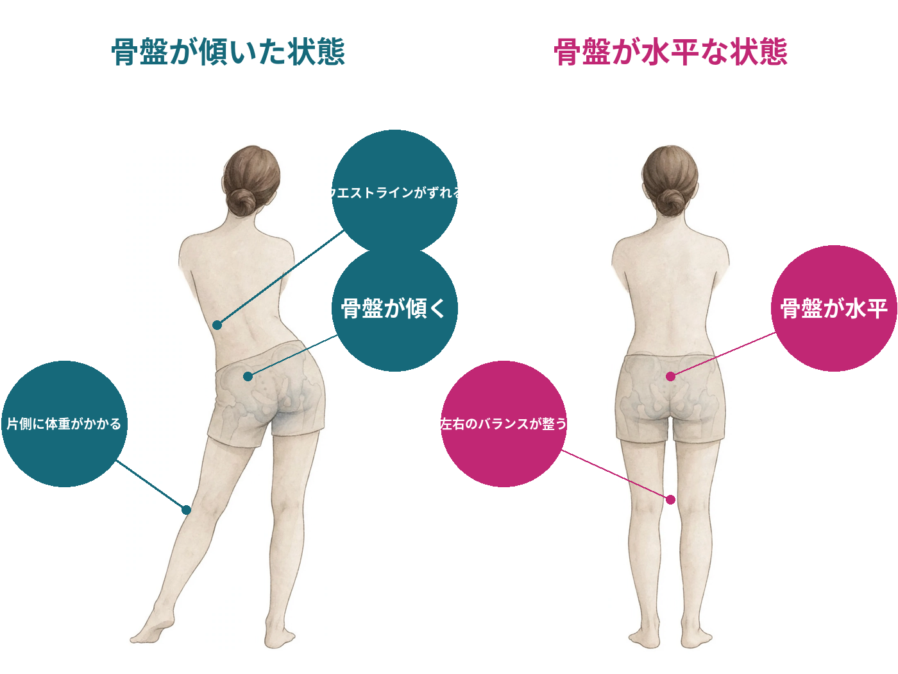

骨盤のゆがみ
美容整体ステラ・ポラリス東三国｜大阪市淀川区東三国・東三国駅徒歩5分・女性向け

傾いた骨盤を整えて、左右バランスの取れた土台へ
スカートが回ってしまう、片側だけ腰が重い、立っていると片足に体重をかけたくなる——骨盤の傾きは、日常生活のクセから少しずつ積み重なります。骨盤は体の土台であり、その傾きは腰の重さや脚のライン、姿勢全体の見え方にもつながります。このページでは、骨盤が傾く仕組みと、土台から整えてバランスの取れた姿勢を目指す当サロンでのケア、ご自宅でできるセルフケアをご案内します。骨盤のゆがみは、特別なことではなく、毎日の座り方や立ち方のクセの積み重ねで誰にでも起こります。気づいたときから向き合うことが大切です。
ご予約はこちら（Coubic）こんなお悩みありませんか
- スカートやパンツが、いつの間にか回っている
- 立つとき、片足に体重をかけるのが楽に感じる
- 片側だけ、腰やお尻が重く感じることが多い
- 鏡を見ると、ウエストのくびれの位置が左右で違う
- バッグをいつも同じ側の肩にかけている
- 足を組むクセが、なかなかやめられない
- 歩くと、片側の靴底だけ減りが早い気がする
当てはまる項目が多いほど、体の使い方の偏りが骨盤の傾きとして積み重なっている目安とされています。骨盤の傾きは、クセに気づいて整えることで向き合えます。次のセルフチェックで、骨盤の高さの傾向を確かめてみましょう。骨盤の傾きは、その日の疲れ方でも変わります。朝と夕方で感覚が違う方は、疲労と姿勢が連動している目安です。
簡単セルフチェック（骨盤の高さチェック）
鏡の前で、骨盤の左右の高さを確かめる簡単な方法です。
- 鏡の前に立ち、両手のひらを骨盤の上の骨（腰骨）に当てます。
- 左右の手の高さに差がないか、肩の高さとあわせて確認します。
- 片側の手が明らかに高い、肩の高さもずれている場合は、体の使い方に偏りがある目安と言われています。
※これは診断ではありません。ご自身の状態の傾向を知る目安としてお使いください。
骨盤のゆがみの原因と仕組み
骨盤は体の土台
骨盤は、上半身の重さを受け止め、両脚へ伝える体の土台です。土台が傾くと、その上の背骨や肩の位置も連動してずれやすく、腰まわりの筋肉には左右で違う負担がかかります。図1のように、骨盤の傾きは全身のバランスの話なのです。

図1 骨盤の傾きと体のバランスの関係、骨盤が水平な状態のイメージ。体の状態には個人差があります。
クセがつくる傾き
足を組む、片足に体重をかけて立つ、同じ側にバッグを持つ——日々の何気ないクセは、骨盤まわりの筋肉の使い方を偏らせます。片側の筋肉は縮み、反対側は伸ばされ続けることで、傾きが定着しやすくなると言われています。原因は特別なことではなく、日常の積み重ねです。左右のクセは、無意識のうちに毎日繰り返されます。一日単位では小さくても、積み重なると姿勢の土台を傾ける力になります。
腰と脚への広がり
骨盤の傾きは、腰の重だるさだけでなく、脚のラインの見え方や歩き方にも関わります。片側の靴底の減りが早い、片側の太ももだけ張るといったサインは、土台の傾きの現れかもしれません。土台から整える視点が、全身のケアにつながります。
ゆがみという言葉について
骨盤の「ゆがみ」と呼ばれるものの多くは、骨そのものの変形ではなく、筋肉の使い方の偏りによる傾きやねじれの感覚を指します。だからこそ、筋肉を整え、使い方のクセを見直すケアに意味があります。強い痛みを伴う場合は、医療機関での確認も大切です。
セルフケアで足りる場合・サロンケアが向く場合
傾きの自覚が軽く、クセの見直しと体操を続ける余裕がある場合は、まずご自宅でのセルフケアを続けて様子を見る方法があります。一方で、片側の腰の重さが続いている、自分の傾きの傾向をプロの目で確認したい、脚のラインまで整えたいという場合は、サロンでのケアが向いている目安になります。サロンでは、骨盤まわりから全身のバランスを整え、施術後に「立ちやすい」「左右の感覚がそろった」と感じやすい状態を目指します。どちらが正解というものではなく、今の状態に合わせて選ぶことが大切です。施術では、立つ・座る姿勢のクセも一緒に確認し、日常で気をつけるポイントをお伝えします。
当サロンでのケア
当サロンの骨盤ケアは、「土台である骨盤まわりを整え、全身のバランスを取り戻す」ことを目指す組み立てです。まず骨盤の傾きと体の使い方のクセを一緒に確認し、部位と目的に合わせて3つの手技を組み合わせます。
美容整体：骨盤の傾きと背骨のラインを整え、左右のバランスが取れた姿勢の土台をつくることを目的に。立つ感覚の違いを一緒に確認しながら進めます。
アロマオイルマッサージ：腰やお尻、脚まわりをオイルでゆるめ、片側に偏った張りをほどいて巡りが流れやすい状態を目指します。
もみほぐし：固まりやすい腰やお尻の筋肉をほぐし、骨盤まわりの動きを引き出すことを目的に進めます。
ケアを通して目指すのは、こんな変化です。
- 骨盤まわりが安定して、立ちやすい感覚へ
- 左右の重さの差がやわらぎ、バランスが取れた姿勢へ
- ウエストラインがそろって見える印象へ
- 腰の重だるさがやわらぎ、歩く姿が軽やかな感覚へ
- クセの見直し方を知り、日常で傾きを戻しやすい状態へ
施術の仕上げには、立ち方のクセの直し方や、骨盤まわりを整える簡単な体操もお伝えします。土台が整うと、上半身の姿勢まで変わって感じられます。日々のクセの見直しとあわせて取り入れてください。ゆがみは一日にしてならず、整えるのも一日にしてならず。焦らず向き合いましょう。

施術の流れ
ご来店後、気になる部位やお悩み、ご希望の強さなどをうかがいます。完全個室のため、周りを気にせずお話しいただけます。
骨盤の傾きや体の使い方のクセ、左右の張りの差などを一緒に確認し、その日の状態に合わせた施術の進め方をご案内します。
美容整体を中心に、ご希望に応じてアロマオイルマッサージ、もみほぐしを組み合わせて進めます。強さは途中でも調整できます。
施術後の状態を確認し、ご自宅で続けやすいセルフケアのポイントをお伝えします。次回の目安についても、ご希望があればご案内します。
料金
| コース | 通常価格 | キャンペーン価格（12/25まで） |
|---|---|---|
| 80分 | 8,000円 | 3,000円 |
| 100分 | 10,000円 | 4,000円 |
| 120分 | 12,000円 | 5,000円 |
クリスマスキャンペーンは12月25日まで、ご新規様もリピーターの方も対象です。施術内容は当日の状態とご希望に合わせて組み立てます。
ご自宅でできるセルフケア
- 骨盤ゆらし：仰向けで膝を立て、骨盤を前後にゆっくりゆらします。各10回、寝る前の習慣にすると続けやすくなります。
- 片足立ちバランス：壁のそばで片足立ちを左右各20秒。左右の安定感の差を知ることも、クセの見直しにつながります。無理のない範囲で行ってください。
- お尻のストレッチ：椅子に座って片足を反対の膝に乗せ、体を前に倒します。左右30秒ずつ、お尻の伸びを感じる範囲で行います。
- クセの入れ替え：バッグを持つ側を週ごとに替える、足を組んだら組み替えるなど、偏りを減らす小さな工夫を続けます。
ご自宅でのケアに：セルフケア資料ライブラリ（無料）
このお悩みに合わせたセルフケアの考え方を、無料の資料ライブラリでご紹介しています。
セルフケア資料ライブラリを開く →
受診の目安
腰の強い痛みや脚のしびれ、力が入りにくい感じがある場合や、転倒などのあとに始まった痛みがある場合は、施術の前に医療機関への受診をおすすめします。気になる症状があるときは、まず医療機関でご相談ください。
よくある質問
Q. 初めてでも大丈夫ですか？
はい。当サロンは完全予約制・完全個室で、1日3組までのご案内です。最初にカウンセリングで体の使い方のクセや気になる部位をうかがい、無理のない内容から始めます。施術の前後で「立ちやすい」「左右の感覚がそろった」といった違いを一緒に確認しながら進めますので、初めての方も安心してご利用いただけます。
Q. 施術は痛いですか？
強さは、ご希望をうかがいながら調整します。骨盤まわりを無理に動かすのではなく、筋肉をゆるめて整える進め方です。感じ方には個人差がありますので、施術中も遠慮なくお声がけください。
Q. コースはどう選べばいいですか？
80分・100分・120分のコースがあり、ケアしたい部位の広さやお時間のご都合に合わせて選べます。骨盤まわりから腰、脚までゆっくり整えたい方には、100分が選ばれることが多いコースです。迷われる場合は、ご予約の際にお気軽にご相談ください。
Q. 場所と予約方法を教えてください。
大阪市淀川区東三国、東三国駅から徒歩5分です。完全予約制のため、予約サイト（Coubic）またはLINE公式アカウントからご予約をお願いしています。
Q. 男性も受けられますか？
当サロンは女性向けのため、男性の方は、同じ東三国の男性専用整体院「北辰堂」をご案内しています。
施術者について
平賀建人（施術歴30年）
鍼灸師・登録販売者・アロマセラピスト・パーソナルトレーナーの資格を持ち、美容整体を中心に、アロマオイルマッサージ、もみほぐしを、その日の状態とご希望に合わせて組み合わせて施術します。このページの内容は、施術者の知識と経験をもとに作成しています。

料金・ご予約
ご新規様もリピーターの方も 12/25まで
80分 3,000円／100分 4,000円／120分 5,000円
通常価格は80分8,000円／100分10,000円／120分12,000円です。施術内容はご希望に合わせて組み立てます。
営業時間：月〜土 17:00〜23:00／日 10:00〜23:00（完全予約制）｜電話：080-2468-3086
大阪府大阪市淀川区東三国2丁目25番4号101（東三国駅徒歩5分）